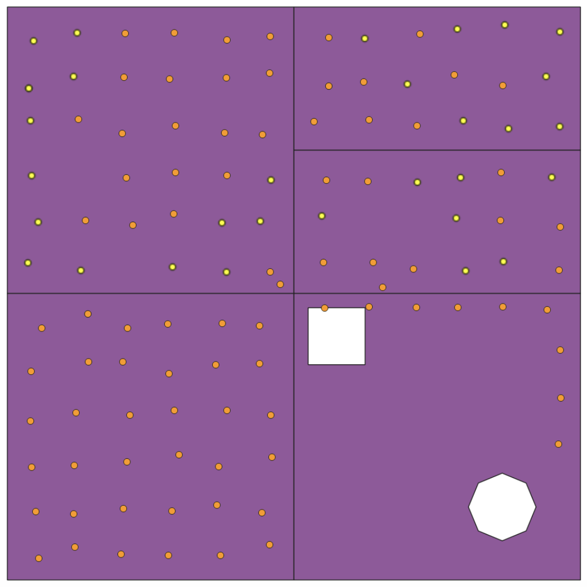
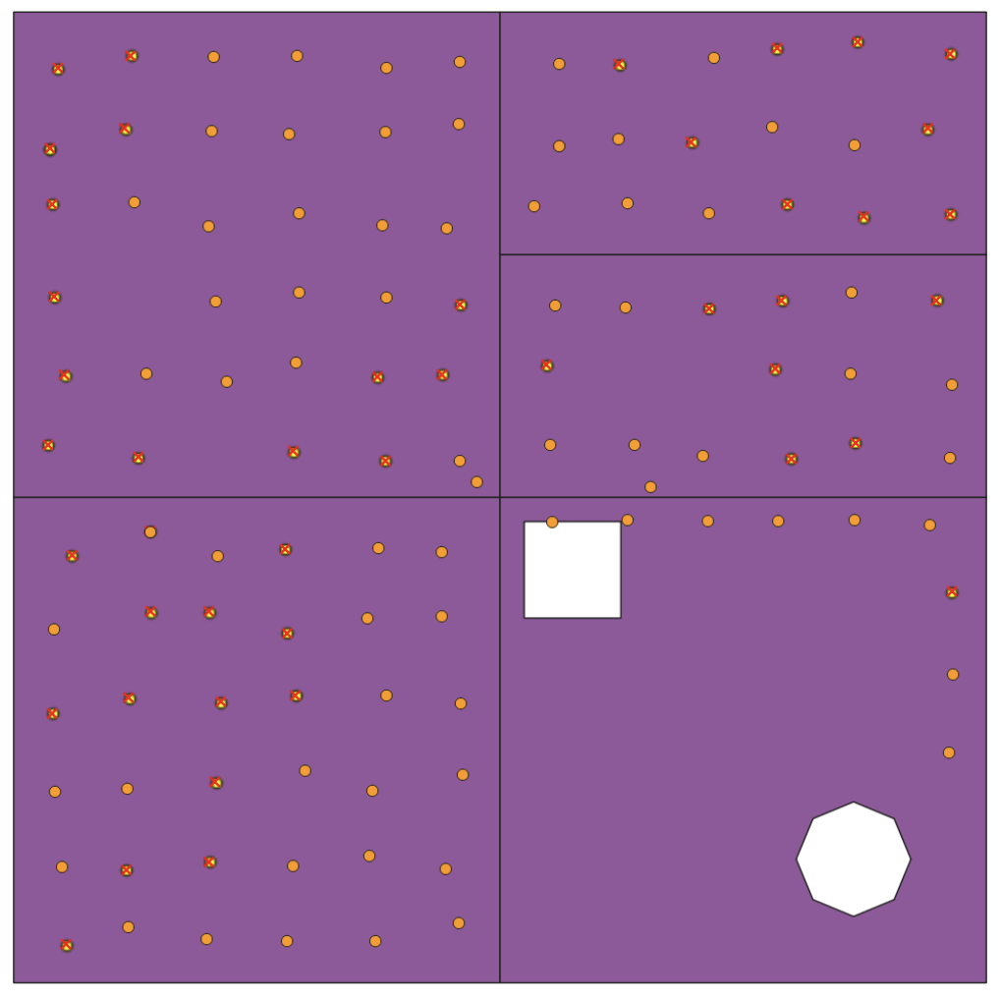
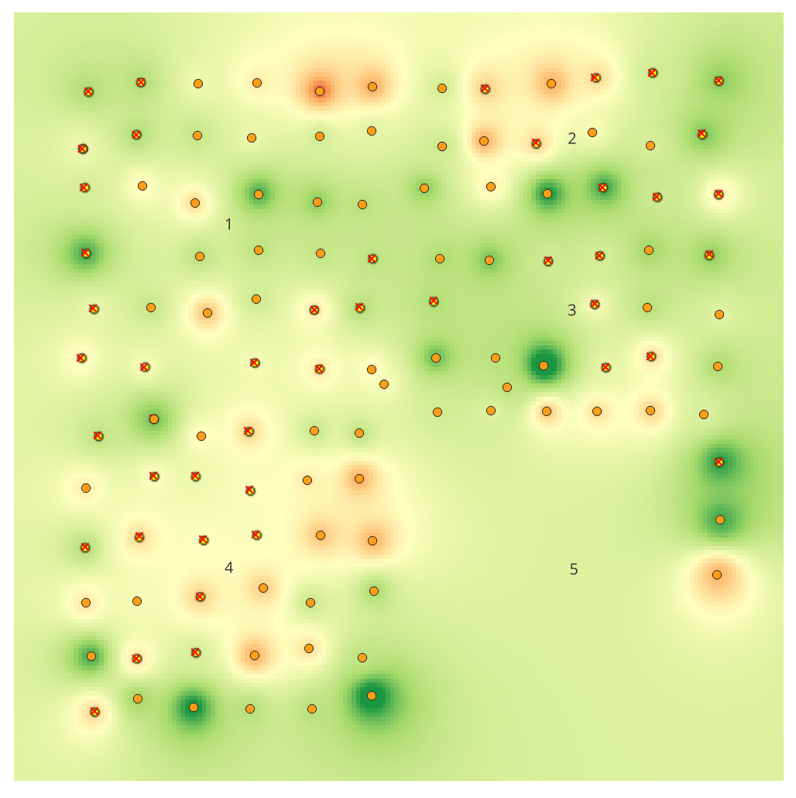
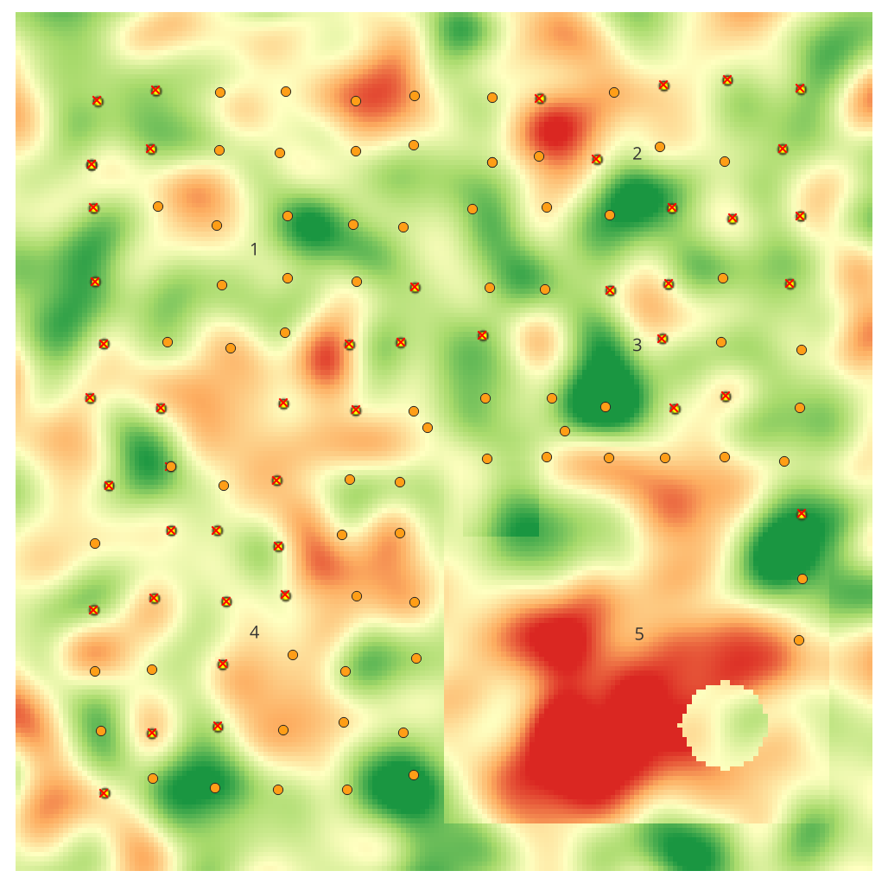
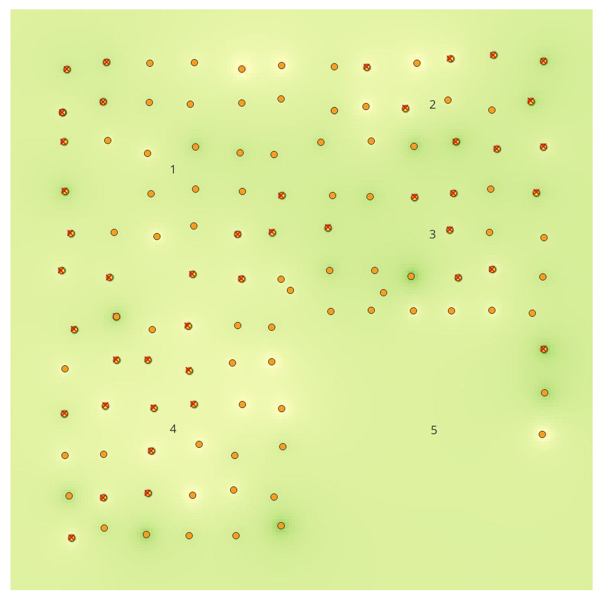
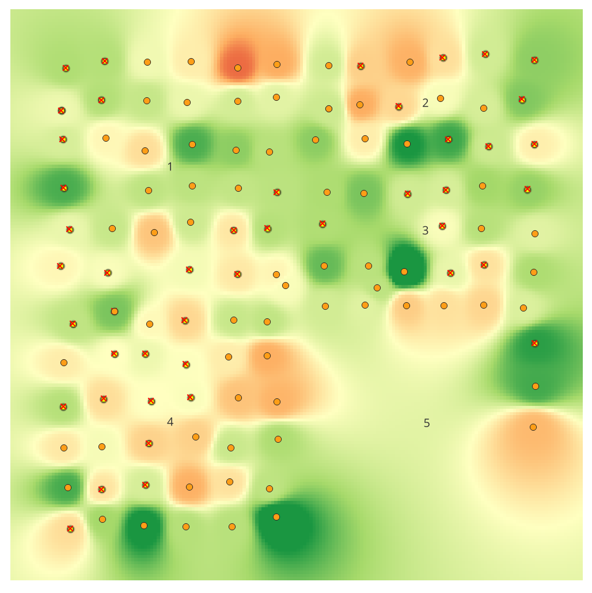
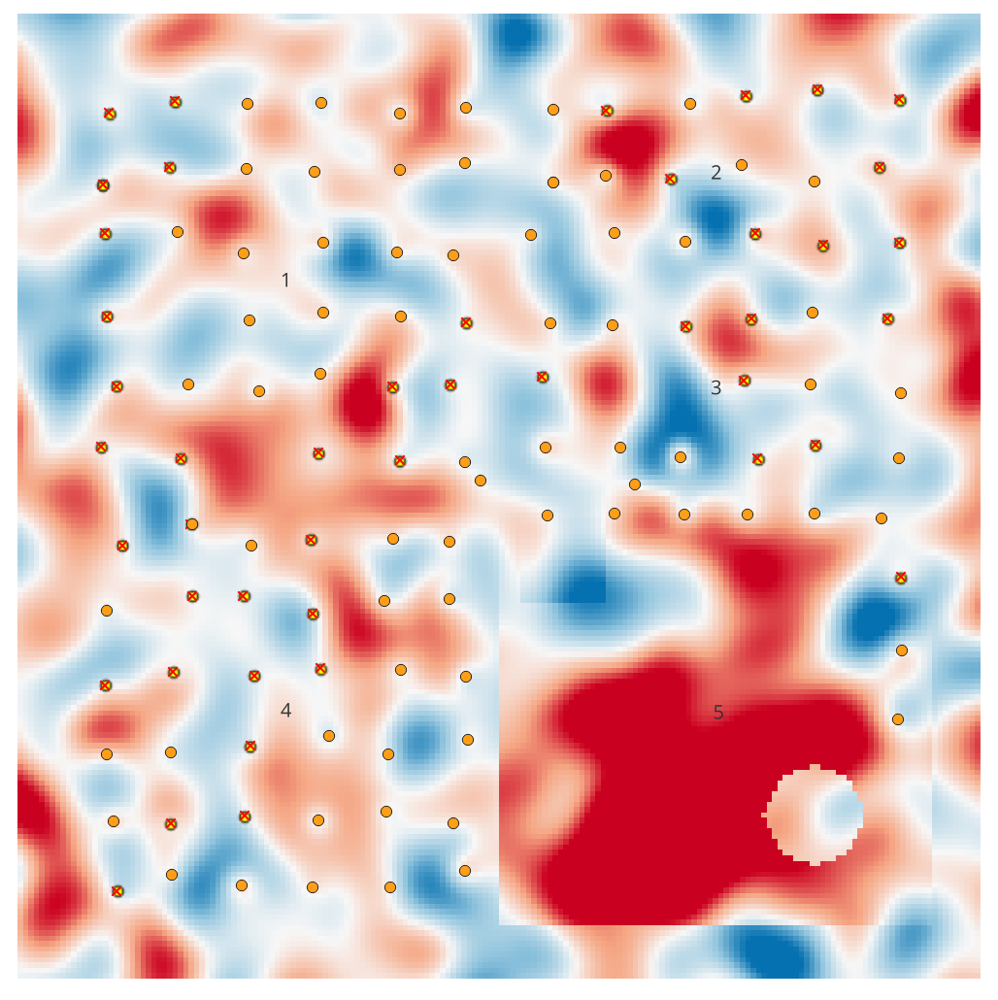

Lab 05 · November 2026
Can Field 5 Grow Corn? What Three IDW Powers Say About A Field’s Phosphorus
The question
Can Field 5, unused since 2019, grow corn, according to a phosphorus map interpolated from 118 soil samples, and where is that map wrong when I check it against the truth?
The data
-
A made-up farm. The farm was created for this course. The GeoPackage,
LAB05_simplified_farm.gpkg, contains five field polygons and 118 sample points. The layers use EPSG:32614. For corn, the required ranges are pH 6–7, phosphorus (P) 0.25–0.80, and potassium (K) 1.8–2.9. -
Two units in the P column. The phosphorus values are not all recorded on the same scale.
Batch B, measured by Platte Valley Agronomy in Fields 4 and 5, ranges from 20.6 to 89.6 and is recorded
as a percentage. Batch A, measured by Sandhills Soil Lab in Fields 1, 2, and 3, ranges from 0.111 to
0.998 and is recorded as a fraction. I noticed the difference by sorting the P column and checking its
lowest and highest values. I corrected the values in a new field called
P_fix. -
The answer key.
LAB05_truth-p.tifshows the actual phosphorus value in every 10 m cell. Since this farm is synthetic, I could compare my estimated map with the actual values. - Uneven sample locations. Field 5 has only nine samples. They are all along its northern edge and eastern fence, leaving most of the field without nearby measurements.
What I did
I used QGIS 3.44 LTR and saved the project as lab05.qgz. First, I sorted the
P column to check its range. I then selected samples that met all three corn requirements:
pH between 6 and 7, P between 0.25 and 0.80, and K between 1.8 and 2.9. In QGIS, I used this expression:
"pH" >= 6 AND "pH" <= 7 AND "P" >= 0.25 AND "P" <= 0.80 AND "K" >= 1.8 AND "K" <= 2.9.
This first selection returned 31 samples.
Next, I used the Field Calculator to create P_fix. The expression divided the phosphorus
values in batch B by 100 and left the other values unchanged:
CASE WHEN "batch" = 'B' THEN "P" / 100 ELSE "P" END. After saving the new field, I ran
the same selection again using P_fix instead of P.
I also used the Measure Line tool to measure from the middle of Field 5 to its nearest sample, and from
the spot in Field 1 that looked furthest from a sample. Then I created three phosphorus surfaces using
inverse distance weighting (IDW). I used P_fix, 10 m cells, and powers of 1, 2, and 4.
The power controls how strongly nearby samples influence the estimate: a higher power gives more weight
to nearby samples. I used the same colour scale for all three maps so they could be compared. Red means
low phosphorus.
Finally, I compared the power-2 map with LAB05_truth-p.tif. In the Raster Calculator, I
used "idw_p2@1" - "LAB05_truth-p@1" to subtract the actual values from my estimates.
I saved the result as error_p.tif. This error map shows where my estimate was higher or
lower than the actual phosphorus value; red means my estimate was too high.
The maps
The farm is synthetic. Figures 2 and 3 use the same colour scale (0–0.8), with red showing low phosphorus, so the different IDW surfaces can be compared fairly.


P values. Right: 46 selected
using the corrected P_fix values. Selected points are yellow. EPSG:32614.


P_fix. Right: actual
phosphorus values from the answer key. Both maps show 10 m cells at the same zoom and colour scale
(0–0.8; red means low phosphorus).


P_fix, 10 m cells, and the same colour scale as Figure 2.

Results
The three IDW maps make Field 5 look as though it has enough phosphorus for corn. The actual values tell a different story: 60.6 acres, or 41% of Field 5, are below the required phosphorus level of 0.25. The problem is that the samples do not cover the parts of the field where phosphorus is low.
Answers to the lab questions
| Question | Answer |
|---|---|
| Q1. Which rows use the bigger scale? | Batch B, measured by Platte Valley Agronomy in Fields 4 and 5, uses the larger percentage scale (20.6–89.6), while Batch A, measured by Sandhills Soil Lab in Fields 1, 2, and 3, uses decimal fractions (0.111–0.998). |
Q2. How many samples suit corn using P and P_fix? |
The original P values select 31 samples. After correcting the units,
P_fix selects 46. The 15 additional samples are in Fields 4 and 5.
|
| Q3. How far are the sample gaps in Fields 5 and 1? Where will the map be least reliable? | The middle of Field 5 is 339.776 m from its nearest sample. The most isolated spot I chose in Field 1 is 148.716 m from a sample. I expected the map to be least reliable in Field 5 because its centre is much farther from the nearest measurement. |
| Q4. Does any IDW power show a phosphorus problem in Field 5? | No. None of the three maps shows a red, low-phosphorus area in Field 5. Power 4 adds a light orange patch near a sample on the eastern edge, but the south-western part of the field still does not appear low in phosphorus. |
The phosphorus units changed the result
My first filter followed the corn requirements correctly, but it selected no samples in Fields 4 or 5. The issue was not the filter; it was the units in the data. Batch B recorded phosphorus as a percentage, while the filter expected a fraction between 0.25 and 0.80. Dividing those batch B values by 100 brought the total from 31 selected samples to 46. This showed me why it is important to check the values before running an analysis.
Field 5 had the largest sampling gap
The middle of Field 5 is 339.776 m from its nearest sample. In Field 1, my measurement was 148.716 m. The Field 1 result is a little higher than the roughly 130 m suggested in the lab instructions because I chose the spot by eye. Even so, Field 5 clearly has the larger gap, which makes its predicted values less reliable.
Changing the IDW power did not fix the problem
| Surface | Field 5 below P = 0.25 (acres) |
|---|---|
| IDW, power 1 | 0.0 |
| IDW, power 2 | 0.2 |
| IDW, power 4 | 3.6 |
| Actual values | 60.6 (41% of Field 5) |
These acreage results are provided in the lab instructions; I did not calculate them myself. The three powers produce slightly different maps. A higher power gives more influence to nearby samples, which creates stronger changes around those points. But changing the power cannot make up for missing samples. The low-phosphorus area in the south-west of Field 5 is about 400 m from the nearest sample, so the maps do not capture it.
The error is largest where there are no samples
Figure 4 shows that the power-2 map overestimates phosphorus across Field 5. According to the lab instructions, the average error is 0.18 in Field 5, compared with about 0.02 in Fields 1–4. The map looks smooth and convincing, even where it has little information to work with. The actual map also contains small low-phosphorus patches in the other fields that the IDW surfaces smooth over.
Written reflection
Based only on these samples, I would not tell the farmer that Field 5 is ready for corn. The nearest sample to its middle is about 340 m away, so the map estimates a large area without nearby measurements. All three IDW maps show only 0.0–3.6 acres below the corn phosphorus minimum, but the actual values show 60.6 acres (41% of Field 5). I would explain that the result is uncertain and recommend taking more samples in the south-west before planting.
The same problem matters when maps describe people. For example, an air-quality map based on only a few monitoring stations may estimate pollution in neighbourhoods with no nearby monitor. Residents in those areas, especially people already far from public services, may be overlooked if pollution is underestimated. The map can look complete even though the gaps in measurement hide the people most affected.
Limitations and AI use
This analysis only looks at phosphorus. I did not interpolate pH or K or create a map combining all three requirements. The lab instructions report that a combined corn-suitability map would show 393, 322, or 245 acres at IDW powers 1, 2, and 4, but I did not calculate those figures. I compared only three IDW powers, did not use cross-validation, and made an error map only for power 2. The acreage and average-error figures above come from the lab instructions, not my own calculations. I treated batch B as percentages based on its value range and the lab instructions, since the data file does not label the units. My Field 1 distance is based on a spot I chose by eye, so it may not be the field's largest possible gap. Finally, this is a synthetic farm, so the results show how interpolation can fail when samples are unevenly spread; they do not describe a real farm.
AI use: I used Claude to help organise my notes and check the arithmetic. I checked the numbers against my QGIS results (31 and 46 selected samples; 339.776 m and 148.716 m) and the lab instructions. The analysis and interpretation are my own.